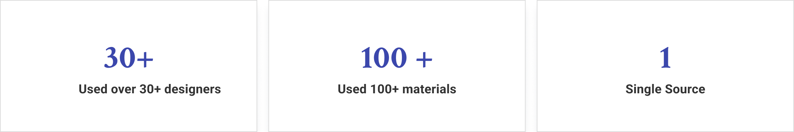
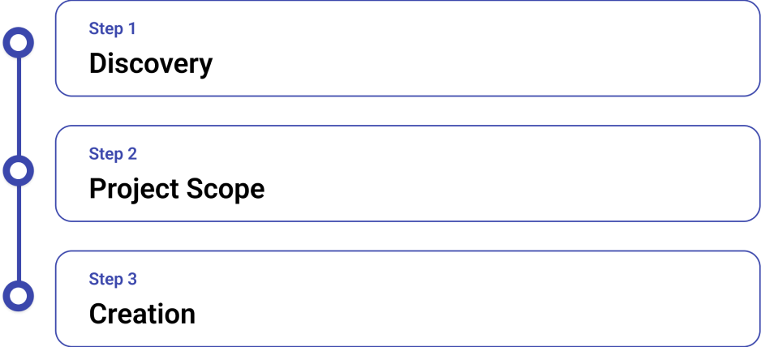
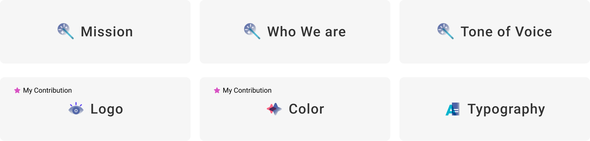
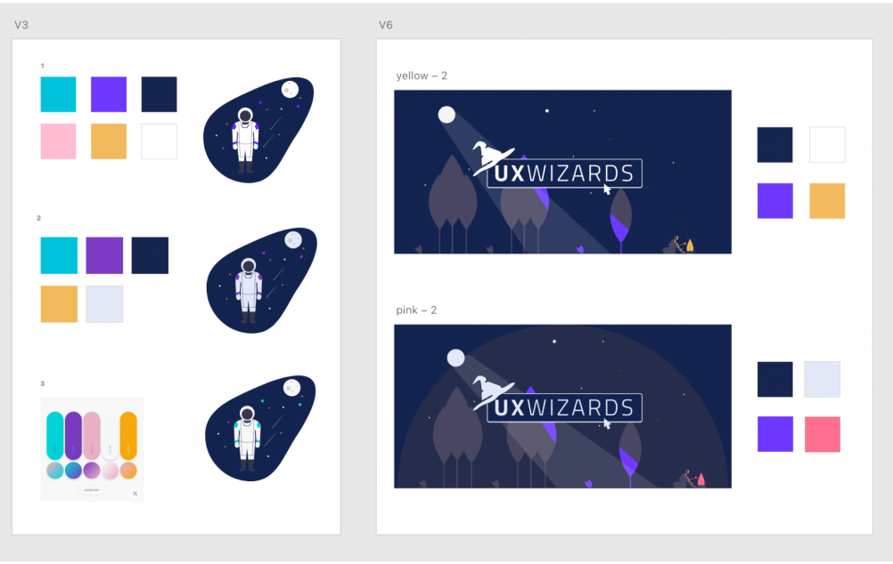
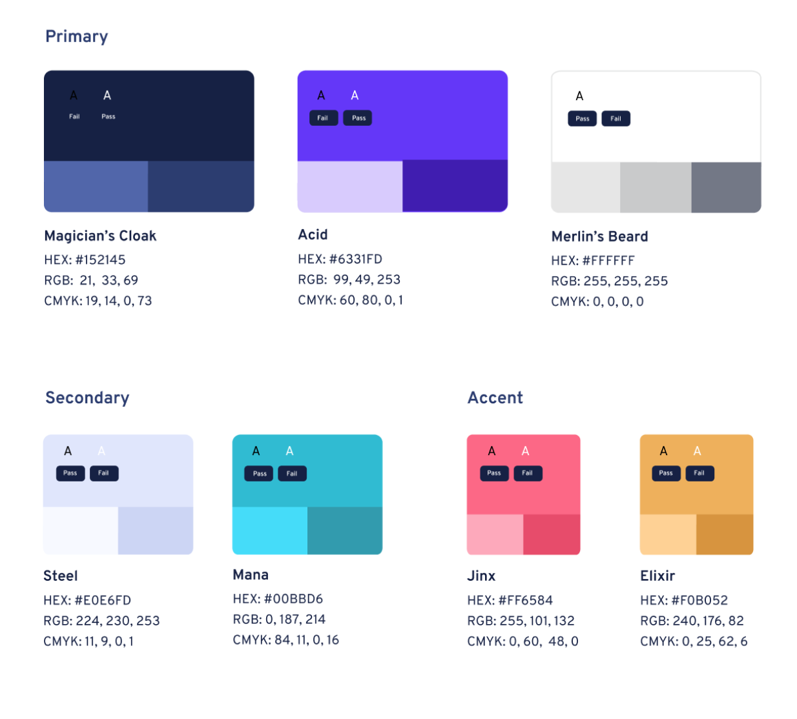
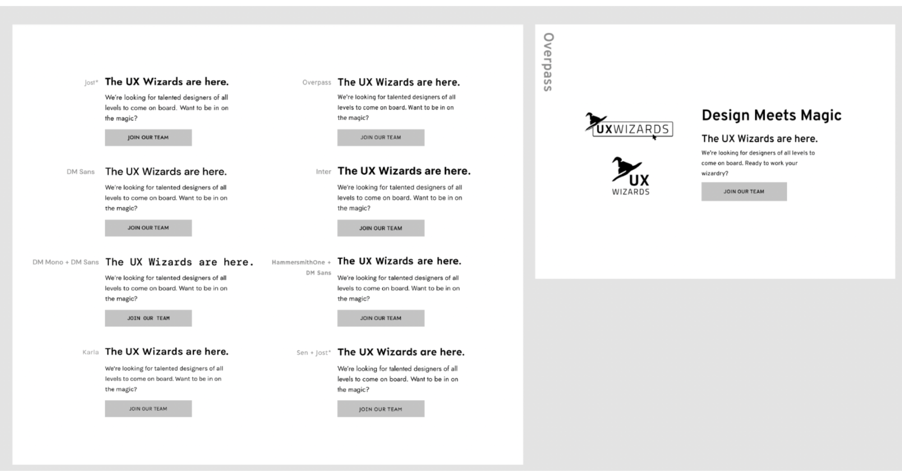
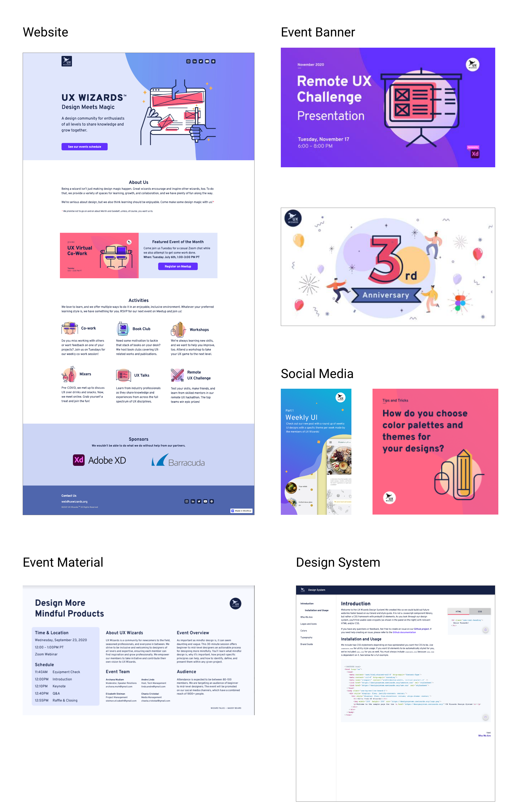

UX Wizards is a South Bay-based design community for enthusiasts of all levels to connect, share knowledge, and grow. Recognizing the need for visual alignment as the community scaled, I established the organization’s design team and led the creation of UX Wizards' first official Brand Guide to standardize guidelines across our cross-functional teams. Within this initiative, I owned the end-to-end design and documentation for two core pillars: Logo Guidelines and the Color Palette.
YEAR
2020, 4 month
ROLE
Project Lead,
Design
TEAM
3 Designers,
2 Content Writers
TOOLS
Figma

Because volunteers designed independently using their own styles, the final product lacked a cohesive feel
GoalIdentify the community's purpose, vision, mission, and style, and align stakeholders on those ideas. Then, translate that identity into our first official Brand Guide
Successful Brand Guide will
Planning before creating

Before we start the design, we spent time to set the scope, and discovery stage, we conducted interview with stakeholders to understand their vision.
Finding direction through research, stakeholder interviews, and design exploration
We conducted a survey of the community leaders to learn their visions for the group.
This research became the blueprint for our mission and Brand Guide.
We researched other design communities to see how they position their brands.
We analyzed multiple brand guides to evaluate style, organization, content, and layout.
We created mood boards to explore the design direction.
Research and discussion led us in the direction of an inclusive, gender-neutral, plus a fun and magical feel. This is because community members are of various ages, genders, and backgrounds. We wanted everyone to feel welcomed through the brand.
For the MVP, we prioritized the core essentials and focused on these six foundational sections:

Expressing our brand identity through a playful, magical color palette

Finalizing the palette was a challenge. To visualize balance and context, I tested several color schemes against a core illustration. This experimentation helped me understand how different combinations shifted the overall mood
A foundational palette of navy, white, and light purple anchors the system and unifies our visual assets. Vibrant red and yellow accent colors are used intentionally to inject energy and highlight key visual elements.

We selected our typefaces based on two criteria: legibility and a robust selection of weights and styles

Ultimately, the team selected Overpass for its exceptional legibility and robust weight family, which functions perfectly across headers and body text. We felt a strong connection to this typeface because it is widely used in American road signage, beautifully tying into the theme of navigation and UX Wizard’s diverse membership.
Brand guide is used for websites, event banners, marketing materials and the design system

Translating abstract brand "feelings" into concrete design and writing rules is tough because everyone interprets emotions differently. By talking with stakeholders early on, we turned scattered ideas into one clear, shared vision. This gave us a solid blueprint to guide our work before we even started designing.
I initially felt intimidated by creating this brand guide by myself. The turning point was bringing a team of designers and a content writer into the process. By collaborating, we elevated the entire project, turning an ambitious concept into a tangible reality..